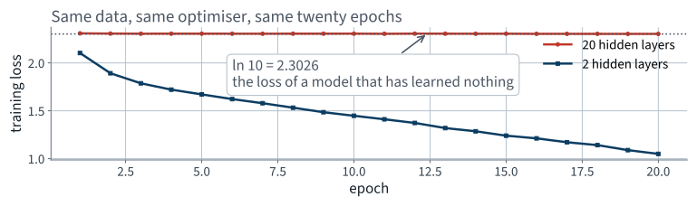
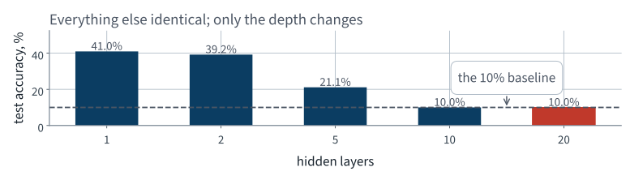
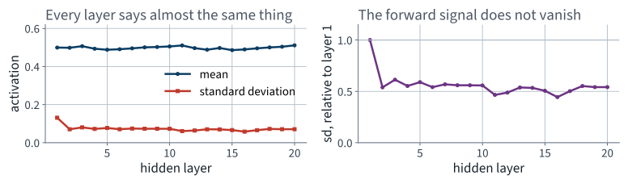
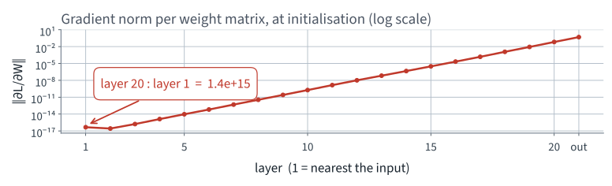
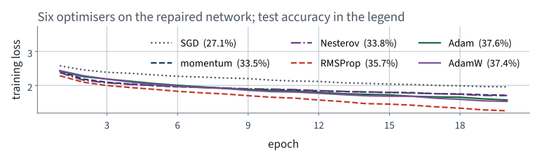
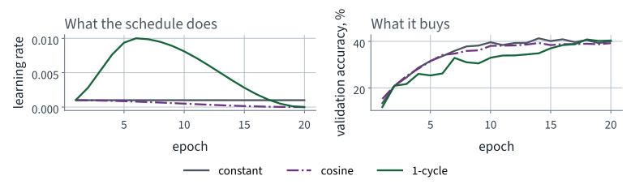
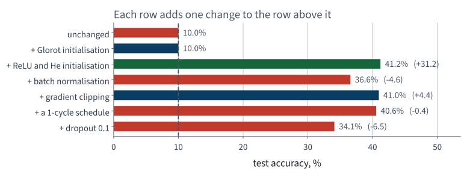

CIFAR-10
Lecture 11 Géron Ch. 11
Applications of Machine Learning
BSc Mathematics of Artificial Intelligence · Third year
Lecture 10 took the training loop out of
fit() and gave it to you:
requires_grad, and the five-line loop:
zero_grad, forward, loss, backward,
stepzero_grad()
and a missing model.eval() — and a metric averaged
per batchDataLoader, a custom Module, Optuna, and a
checkpoint that reloads to the same functionRead that again and note what it does not say: nothing about how the weights start out. That is not something we are hiding — it is the ordinary case. Almost no specification mentions it.
Measured on one run of this lecture’s notebook; hardware, library versions and random seeds can make a re-run differ slightly.
def make_net(depth=20, width=100, n_in=3072, n_out=10):
layers, prev = [], n_in
for _ in range(depth):
layers += [nn.Linear(prev, width), nn.Sigmoid()]
prev = width
layers.append(nn.Linear(prev, n_out))
return nn.Sequential(*layers)
net = make_net()
Nine lines: one nn.Sequential, a
linear layer and a logistic, with the middle repeated
20 times.
| Training loss | |
|---|---|
| A model that has learned nothing, $\ln 10$ | 2.3026 |
| Epoch 1 | 2.3091 |
| Epoch 20 | 2.3036 |
8 seconds on mps, 20 epochs, 500,210 parameters.
The loss moved by 0.0055 in 20 epochs.
Measured on one run of this lecture’s notebook; hardware, library versions and random seeds can make a re-run differ slightly.

The red curve is not noisy, or slow, or plateauing early. It has not started.

1, 2, 5, 10 and 20 hidden layers; same data, seed, optimiser and epochs. Adding layers made it worse, and past a point made it useless. That is not what capacity is supposed to do.
Which is where owning the training loop pays off.
Measured on one run of this lecture’s notebook; hardware, library versions and random seeds can make a re-run differ slightly.
Backpropagation computes 500,210 partial derivatives on every
batch. Under MLPClassifier.fit() every one of them was
discarded.
They are all still here, in p.grad, and we can
look at any of them.
Two probes, about ten lines each. Without them the diagnosis today is “it does not train” and there is no next step.
Measured on one run of this lecture’s notebook; hardware, library versions and random seeds can make a re-run differ slightly.
@torch.no_grad()
def activation_stats(net, X, n=512):
net.eval()
h, rows = X[:n], []
for m in net:
h = m(h)
if isinstance(m, nn.Sigmoid):
rows.append({"mean": float(h.mean()),
"sd": float(h.std()),
"sat": float(((h - .5).abs() > .45)
.float().mean())})
return rows
Running the modules by hand instead of calling
net(X). That is legal because a Sequential is an
iterable of modules, and it is the cheapest possible instrumentation.

Mean near a half, spread near 0.071, flat for twenty layers. Hold that conclusion for one slide.
h.std() spans the whole tensor, so it is dominated by the spread of the layer’s random biases across units — which does not change with depth. It would read 0.07 in a network that had stopped computing entirely.
What carries information is the spread down the batch — how much a unit moves when the input does.
| Hidden layer | 1 | 5 | 10 | 20 |
|---|---|---|---|---|
h.std() — what we plotted | 0.131 | 0.077 | 0.073 | 0.071 |
h.std(dim=0).mean() — the signal | 1.3e−01 | 5.9e−05 | 3.0e−09 | 2.4e−17 |
Sixteen orders of magnitude. The forward signal does die — by a factor of 0.148 per layer, which is the number the derivation predicts from the fan-in and the same rate the gradient vanishes at. By layer 20 the network is no longer a function of its input.
And probe 1’s sat statistic was no better. It asks whether
$|h - \tfrac12| > 0.45$, in a band whose sd is 0.071
— a threshold 6.3 standard deviations away, and 3.4
even at layer 1. Nothing could ever have exceeded it. It read 0.000 at
every depth, and that was arithmetic, not evidence.
Measured on one run of this lecture’s notebook; hardware, library versions and random seeds can make a re-run differ slightly.
lins = [m for m in net if isinstance(m, nn.Linear)]
for _ in range(8): # 8 batches, not 1
net.zero_grad()
lossf(net(xb), yb).backward()
acc += np.array([float(m.weight.grad.norm()) for m in lins])
profile = acc / 8
Eight batches rather than one, because a single batch of 128 is a noisy estimate of anything and a course that says so should not then quote one.
Measured on one run of this lecture’s notebook; hardware, library versions and random seeds can make a re-run differ slightly.

Read the axis. Each gridline is a factor of ten, and the line crosses about 15 of them.
0.1593
The line is straight on a log axis, so it is a geometric sequence: not one bad layer, but the same factor at every layer. That factor, $\rho$, is the geometric mean of the ratio between neighbouring layers, over 19 steps.
| Per layer, descending | × 0.1593 |
| Over 19 layers | × 6.91e-16 |
| Which is one part in | 1.45e+15 |
Keep both numbers in view. The mathematics below derives the first from the shapes of the weight matrices, and the second follows.
Measured on one run of this lecture’s notebook; hardware, library versions and random seeds can make a re-run differ slightly.
A fair question: perhaps the first layers are merely slow to start, and the profile flattens as the network learns. We logged the per-layer norms at every epoch, so this is a lookup and not a guess.
| Gradient at layer 1 | ‖∂L/∂W‖ |
|---|---|
| Epoch 1 | 6.660e-17 |
| Epoch 20 | 4.610e-17 |
20 epochs of Adam did not move the first layer’s gradient into a range where a learning rate of 0.001 could do anything with it.
Adam divides by a running estimate of the gradient’s own magnitude, so it is tempting to think a small gradient is automatically compensated.
What we cannot yet say: why that factor is 0.159 and not 1.
That is a question about the weight matrices themselves, and it has an exact answer.
Measured on one run of this lecture’s notebook; hardware, library versions and random seeds can make a re-run differ slightly.
One layer, activation dropped: $z_i = \sum_{j=1}^{n_{\text{in}}} w_{ij}\,a_j$, where $n_{\text{in}}$ is the fan-in — 100 on our hidden layers, 3,072 on the first. Three assumptions, stated so they can be checked:
Then each term $w_{ij}a_j$ has mean zero, the terms are uncorrelated, and the variances add:
The input variance is multiplied by a factor at every layer. That is what makes depth dangerous.
Measured on one run of this lecture’s notebook; hardware, library versions and random seeds can make a re-run differ slightly.
| To preserve… | the recursion sums over | so it asks for |
|---|---|---|
| the forward signal | the fan-in, $n_{\text{in}}$ | $\operatorname{Var}(w) = 1/n_{\text{in}}$ |
| the backward gradient, $\bar a = W^{\mathsf T}\bar z$ | the fan-out, $n_{\text{out}}$ | $\operatorname{Var}(w) = 1/n_{\text{out}}$ |
The two agree only when $n_{\text{in}} = n_{\text{out}}$ — never on our first layer, 3,072 into 100. So do not choose: take the harmonic mean of the two demands.
A small error in both directions rather than a large one in either. On a square layer it is exact, and reduces to $1/n$.
Measured on one run of this lecture’s notebook; hardware, library versions and random seeds can make a re-run differ slightly.
With the activation $\varphi$ put back, the per-layer factor
on the backward signal — the $\rho$ we measured — is
$\rho = \sqrt{n_{\text{out}}\operatorname{Var}(w)\,\mathbb{E}[\varphi'(z)^2]}$.
ReLU’s derivative is 1 half the time and 0 the other half, so
$\mathbb{E}[\operatorname{ReLU}'(z)^2] = \tfrac12$: it discards half the
variance. Pay for it by doubling the weight variance:
On our hidden layers, $\operatorname{Var}(w) =$ 0.0200 and $\operatorname{sd}(w) =$ 0.1414 — against Glorot’s 0.1000 and the default’s 0.0577.
Then $\rho = \sqrt{n_{\text{out}}\cdot \tfrac{2}{n_{\text{in}}}\cdot\tfrac12} = \sqrt{n_{\text{out}}/n_{\text{in}}}$ — which is 1 exactly when the fans are equal.
Measured on one run of this lecture’s notebook; hardware, library versions and random seeds can make a re-run differ slightly.
for m in net:
if not isinstance(m, nn.Linear):
continue
nn.init.xavier_normal_(m.weight) # Var = 2/(fan_in + fan_out)
nn.init.zeros_(m.bias)
# or, for ReLU:
nn.init.kaiming_normal_(m.weight, nonlinearity="relu")
Two lines. kaiming_normal_ is He; the argument
nonlinearity is what selects the factor of two, and its default
is "leaky_relu" with slope 0.01 — near enough, but say
what you mean.
| $\rho$ | End to end | Test accuracy | |
|---|---|---|---|
| Default, logistic | 0.1593 | 1.4e+15 | 10.0% |
| Glorot, logistic | 0.2531 | 2.2e+11 | 10.0% |
Nearly four orders of magnitude better, and still eleven orders of attenuation — which is hopeless.
Because the logistic’s derivative, $\sigma'(z) = \sigma(z)\bigl(1-\sigma(z)\bigr)$, is at most $\tfrac14$ for every $z$. With the weight scale neutralised, $\rho$ can be no larger than that: the measured $\rho$ is now 0.253 — which is 0.25, the logistic’s own ceiling. You cannot initialise your way out of the activation function.
Measured on one run of this lecture’s notebook; hardware, library versions and random seeds can make a re-run differ slightly.
Every requirement on $\varphi$ comes from the derivation:
ReLU satisfies the first two and fails the third. It is still the right default.
The repairs are all the same idea — give the negative side a non-zero slope:
| Variant | Negative side | Cost |
|---|---|---|
| Leaky ReLU | $\alpha z$, $\alpha \approx 0.01$ | none |
| ELU | $\alpha(e^{z} - 1)$ | an exponential per unit |
| SELU | ELU, scaled to self-normalise | strict conditions on the architecture |
| Activation | Initialisation | Test accuracy |
|---|---|---|
| logistic | Glorot | 40.4% |
| tanh | Glorot | 40.2% |
| ReLU | He | 37.6% |
| Leaky ReLU | He | 35.4% |
| ELU | He | 43.3% |
| SELU | Glorot | 41.8% |
Spread: 8.0% points — and the logistic is not last.
All six with batch normalisation, which is why the logistic survives: normalisation puts the pre-activations back where its derivative is largest, at every step. Without normalisation, moving off the logistic was worth 30.7% points. With it, the choice of activation is worth 8.0%.
Measured on one run of this lecture’s notebook; hardware, library versions and random seeds can make a re-run differ slightly.
Initialisation gets $\rho$ right once. Normalisation makes it right at every step, by standardising each layer’s inputs and then learning what scale they should have had.
$\mu_B$ and $\sigma_B$ are computed over the batch; $\gamma$ and $\beta$ are learned. The second step is what stops it from being a straitjacket: the network can undo the normalisation if it needs to.
Which is Lecture 10's model.eval() failure
again — and it is now much harder to catch. Dropout wobbles between
calls, so running the evaluation twice exposes it. Batch normalisation in
training mode is deterministic for a fixed batch, so the same trick
finds nothing.
One more question to ask: if there is a normalisation
layer, was eval() called? Running it twice will not tell you.
| On the ReLU + He network | Test accuracy | Parameters | Seconds, 3 epochs |
|---|---|---|---|
| No normalisation | 40.7% | 500,210 | 5.24 |
| Batch normalisation | 37.6% | 504,210 | 11.30 |
| Layer normalisation | 41.9% | 504,210 | 9.49 |
Batch normalisation made it worse, by -3.2% accuracy points.
The timing is the minimum of 3 repeats: these figures were generated on a shared machine, contention can only make a run slower, so the smallest reading is the closest to the true cost. Batch normalisation costs 2.16× the epoch.
Measured on one run of this lecture’s notebook; hardware, library versions and random seeds can make a re-run differ slightly.
loss.backward()
torch.nn.utils.clip_grad_norm_(net.parameters(), 1.0)
opt.step()
Rescale the whole gradient vector when its norm exceeds a threshold. It preserves the direction and bounds the length.
This is a defence against $\rho > 1$. We have $\rho < 1$. Look at the distribution of norms before choosing a threshold — a clip below the median silently turns your optimiser into something else.
| Gradient clipping at 1.0 | Test accuracy |
|---|---|
| applied alone to the failing network | 10.0% — nothing |
| added to the repaired network | 36.6% → 41.0% |
Alone it cannot help: you cannot bound your way out of a gradient that is 1e+15 times too small. On the repaired network the step norms have a median of 3.12 under He, so a threshold of 1.0 sits below it and acts as a step-size limiter rather than a safety net, and here that was worth +4.4% points.
Which is a useful effect obtained for the wrong reason. If you want a smaller step, set a smaller learning rate and say so.
Measured on one run of this lecture’s notebook; hardware, library versions and random seeds can make a re-run differ slightly.
Now that the gradient reaches every layer, the optimiser has something to work with. Comparing them on the broken network would have measured nothing.
| Optimiser | Idea | Test accuracy |
|---|---|---|
| SGD | step along the gradient | 27.1% |
| Momentum | accumulate a velocity | 33.5% |
| Nesterov | measure the gradient ahead of the step | 33.8% |
| RMSProp | divide by a running gradient scale | 35.7% |
| Adam | momentum and RMSProp together | 37.6% |
| AdamW | Adam, with the weight decay decoupled | 37.4% |
SGD, momentum and Nesterov at 0.01; the adaptive three at 0.001 — the same learning rate would not be a fair comparison.
AnimationMeasured on one run of this lecture’s notebook; hardware, library versions and random seeds can make a re-run differ slightly.

The spread between the best and the worst optimiser here is far smaller than the effect of the initialisation. Order your effort by the measurement, not by the novelty.
One step size cannot suit both the start of training and the end. The book gives five schedules; three are worth having.
All three need to know how long the run is, which is why
they take total_steps and why changing the epoch count silently
changes the schedule.

Constant 40.0%, cosine 39.9%, 1-cycle 41.2% — on a twenty-epoch run, one seed each. In the ablation the same schedule is worth -0.4 points against a five-seed spread of ±2.40, so read this panel as a shape, not a ranking.
Measured on one run of this lecture’s notebook; hardware, library versions and random seeds can make a re-run differ slightly.
| Configuration | Test accuracy | sd over 5 seeds | Change | Final training loss |
|---|---|---|---|---|
| the failing network, unchanged | 10.0% | ±0.00 | — | 2.3035 |
| + Glorot initialisation | 10.0% | ±0.00 | +0.0 (noise) | 2.3062 |
| + ReLU and He initialisation | 41.2% | ±0.41 | +31.2 | 1.1324 |
| + batch normalisation | 36.6% | ±0.92 | -4.6 | 1.5458 |
| + gradient clipping | 41.0% | ±0.65 | +4.4 | 1.1075 |
| + a 1-cycle schedule | 40.6% | ±2.40 | -0.4 (noise) | 1.2781 |
| + dropout 0.1 | 34.1% | ±0.62 | -6.5 | 1.6252 |
Five seeds a row; typical spread 0.72 points. One step is worth +31.2, forty times that. The 1-cycle schedule does not clear the noise — -0.4 against ±2.40. The last row is dropout, the layer from Lecture 10 that zeroes a random fraction of units in training: a regulariser, added to a network that is not overfitting.
Measured on one run of this lecture’s notebook; hardware, library versions and random seeds can make a re-run differ slightly.

One row moves the number further than the whole journey, and it is the row the mathematics pointed at.
| Accuracy points | |
|---|---|
| The largest single step — ReLU with He | +31.2% |
| Best configuration, against the start | +31.2% |
| The worst single step | -6.5% |
| The last row, against the start | +24.1% |
One change is worth more than the whole ladder.
Which is the answer to “should I add batch normalisation, or dropout, or a schedule?” — the question is malformed until you know which failure you have. Ours was $\rho \ne 1$, and only the repairs that address $\rho$ paid.
Measured on one run of this lecture’s notebook; hardware, library versions and random seeds can make a re-run differ slightly.
| Failure | Diagnosed in | Measured cost |
|---|---|---|
Missing optimizer.zero_grad() | Lecture 10 | 66 points |
| Metric averaged per batch | Lecture 10 | 0.15 points |
| A deep stack on default initialisation | today | 31.2% points |
Every one of them ran to completion and printed a plausible number. The last is the first in which no line of code is wrong.
Measured on one run of this lecture’s notebook; hardware, library versions and random seeds can make a re-run differ slightly.
Not presented — for afterwards
five, in the style of the written paper
Solutions on Lecture 12’s deck.
Solutions on Lecture 12’s deck.
The five set at the end of Lecture 10
not part of this lecture
1. Reverse-mode automatic differentiation costs one sweep for all partial derivatives; forward mode costs one…
Many inputs, one output — which is exactly a loss.
2. Test accuracy on 10,000 images is computed as the plain mean of the per-batch accuracies, in batches of 384.…
The last batch holds 16 images but is weighted as heavily as a full batch of 384. Count the hits over the whole set, or weight each batch by its size.
3. The five lines of the training loop are reordered so that opt.step() comes before loss.backward(). State what…
Nothing raises, and the training loss stays at its starting level: the parameters are never changed.
4. A network with dropout is evaluated without calling model.eval(). Describe the symptom precisely, and the…
The score wobbles between identical calls. Evaluate twice and assert the two agree.
5. In the measured comparison the accelerator barely beat the CPU on the smallest network, and its lead grew as…
Dispatch overhead: on a small matrix product much of each step is the cost of dispatching it, not the arithmetic. The crossover is set by how much arithmetic each batch carries — measured, near-parity at the smallest width and nearly four times faster at the widest.
Measured on one run of this lecture’s notebook; hardware, library versions and random seeds can make a re-run differ slightly.
Lecture 12 · Géron Ch. 12
Why a flattened image is the wrong representation
Weight sharing and equivariance, derived
Convolution, pooling, and a network built and trained from scratch
Run the Lecture 11 notebook first